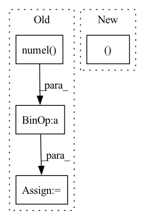

Pattern ID :36790
Before Change
roll_targets = targets[..., idx : idx + H]
ce = F.cross_entropy(logits, roll_targets, reduction="sum")
sum_loss = sum_loss + ce
num_pred = num_pred + roll_targets.numel()
return sum_loss / num_predAfter Change
// roll_logits: (R,B,Q,H)
// roll_idx: (R,)
// targets: (B,T)
R, B, Q, H = roll_logits.shape
logits = roll_logits.reshape(R * B, Q, H) // (R*B,Q,H)
targets = targets.unfold(-1, H, 1).permute(1, 0, 2) // (W,B,H)
targets = targets[roll_idx].reshape(R * B, H) // (R*B,H)In pattern: SUPERPATTERN
Frequency: 4
Non-data size: 4
Instances Fragment ID: 104871201
Project Name: cheind/autoregressive
Commit Name: bd8f0e0dfd5d3fa7abf07c9b48bc4b58604e79f9
Time: 2021-11-16
Author: cheind@profactor.at
File Name: autoregressive/metrics.py
M Class Name: AnonimousClass
N Class Name: AnonimousClass
M Method Name: rolling_origin_accuracy(3)
N Method Name: rolling_origin_accuracy(3)
M Parent Class:
N Parent Class:
M File Name: autoregressive/metrics.py
N File Name: autoregressive/metrics.py
M Start Line: 84
M End Line: 92
N Start Line: 89
N End Line: 93
Before Change
if any([labels is None for labels in all_labels]):
return None
// sampled anchors of all images
num_total_samples = sum([
max(pos_inds.numel() + neg_inds.numel(), 1)
for pos_inds, neg_inds in zip(pos_inds_list, neg_inds_list)
])
// split targets to a list w.r.t. multiple levelsAfter Change
label_weights_list = images_to_levels(all_label_weights, num_level_anchors)
bbox_targets_list = images_to_levels(all_bbox_targets, num_level_anchors)
bbox_weights_list = images_to_levels(all_bbox_weights, num_level_anchors)
return (labels_list, label_weights_list, bbox_targets_list,
bbox_weights_list, num_total_pos, num_total_neg )
def images_to_levels(target, num_level_anchors): Fragment ID: 104871203
Project Name: wxinlong/solo
Commit Name: 20e75c2207ca7c4a3fbf8928ce7f1b499bd94118
Time: 2018-10-07
Author: chenkaidev@gmail.com
File Name: mmdet/core/anchor/anchor_target.py
M Class Name: AnonimousClass
N Class Name: AnonimousClass
M Method Name: anchor_target(10)
N Method Name: anchor_target(7)
M Parent Class:
N Parent Class:
M File Name: mmdet/core/anchor/anchor_target.py
N File Name: mmdet/core/anchor/anchor_target.py
M Start Line: 23
M End Line: 56
N Start Line: 14
N End Line: 70
Before Change
def update(self, model):
self.num, self.model = 0, copy.deepcopy(model)
parameters = [p.numel() for p in model.parameters() if p.requires_grad]
self.parameters = sum(parameters)
self.fisher = [0] * len(parameters)
self.weights = copy.deepcopy(self.fisher)
def diag_fisher(self, inputs:list):After Change
def update(self, model):
self.model = copy.deepcopy(model)
self.weights = copy.deepcopy(self.fisher)
self.num, self.fisher = 0, [0 for p in model.parameters() if p.requires_grad]
def diag_fisher(self, inputs:list):
self.model.zero_grad()
output = self.model(*inputs) Fragment ID: 104871194
Project Name: wang-chen/lgl
Commit Name: 0c207a4570f2ef7707d3d3db23e1471adb611b08
Time: 2020-08-11
Author: jeffsan@gmx.com
File Name: models/ewc_loss.py
M Class Name: EWCLoss
N Class Name: EWCLoss
M Method Name: update(2)
N Method Name: update(2)
M Parent Class: nn.Module
N Parent Class: nn.Module
M File Name: models/ewc_loss.py
N File Name: models/ewc_loss.py
M Start Line: 15
M End Line: 19
N Start Line: 16
N End Line: 18
Before Change
roll_targets = targets[..., idx : idx + H]
ce = F.cross_entropy(logits, roll_targets, reduction="sum")
sum_loss = sum_loss + ce
num_pred = num_pred + roll_targets.numel()
return sum_loss / num_pred
def rolling_origin_accuracy(After Change
// roll_logits: (R,B,Q,H)
// roll_idx: (R,)
// targets: (B,T)
R, B, Q, H = roll_logits.shape
roll_logits = roll_logits.reshape(R * B, Q, H) // (R*B,Q,H)
targets = targets.unfold(-1, H, 1).permute(1, 0, 2) // (W,B,H)
targets = targets[roll_idx].reshape(R * B, H) // (R*B,H) Fragment ID: 104871199
Project Name: cheind/autoregressive
Commit Name: bd8f0e0dfd5d3fa7abf07c9b48bc4b58604e79f9
Time: 2021-11-16
Author: cheind@profactor.at
File Name: autoregressive/metrics.py
M Class Name: AnonimousClass
N Class Name: AnonimousClass
M Method Name: cross_entropy_ro(4)
N Method Name: cross_entropy_ro(3)
M Parent Class:
N Parent Class:
M File Name: autoregressive/metrics.py
N File Name: autoregressive/metrics.py
M Start Line: 70
M End Line: 78
N Start Line: 70
N End Line: 80